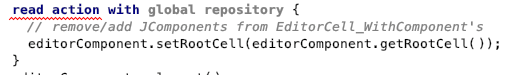

Index
The project isn’t a project.
I want to call
GenerationCheckHelper.checkModelsBeforeGenerationIfNeededto check my model. It that takes aProjectbut myProjectthat I get as an action context isn’t the correct project. The type system complains that it’s not the correct class.How do I get the correct project class?
The two Project interfaces are always a source of confusion. Essentially one comes from the IntelliJ platform and the other one holds MPS specific parts of the project.
com.intellij.openapi.project.Project: The project from the platform stores basic information like the folder where the project is located and gives, for example, access to project plugins.
jetbrains.mps.project.Project: MPS specific aspects of a project like model access or the repository. It also gives access to the modules (languages and solutions) of the project.
To get the MPS Project from an Idea Project use fromIdeaProject from ProjectHelper.
To the a Idea Project from the MPS Project case the interface to MPSProject, if you only have a jetbrains.mps.project.Project, call getProject on it.
contributed by: @coolya
How to you get started using MPS‘ Open API?
Specific Languages blog: The simplest way to use MPS Open API
How to you get MPS core components from code?
From the console:
I want to change something inside a SModule such as adding a dependency but can’t find the right method.
Try casting it to AbstractModule first.
Is there a way to start two instances of MPS, each with its own cache/state?
You can create a copy of you MPS installation and edit the idea.properties file in the bin directory. Changing idea.system.path should allows you start a second instance with dedicated caches/state. If you don’t want to share any configuration also update idea.config.path.
Where can you find builtin icons?
IntelliJ IDEA icons are declared in the class AllIcons. MPS icons are declared in the class MPSIcons.
How can you have settings that get saved globally?1
Preferences can be only used at the project level. Use the workaround described in this answer
or save your values in the global IntelliJ IDEA Registry.
More information about the Registry can be found in this Stack Overflow post.
It can also be shown programmatically by calling new RegistryUi().show().
How can you call make or rebuild?
Use the class MakeActionImpl. Example usages can be found in the same model.
How to you add widgets to the status bar? (for example: memory indicator, save transient models)
Have a look at this answer. Make sure to call this code from a project plugin.
How do you display a message in the status bar? (left bottom corner)
Note: the message might not be visible when executing the code from the console, because the rebuild of the model overrides it with a new message:
WindowManager.getInstance().getStatusBar(ProjectHelper.toIdeaProject(#project))
How can I register an IntelliJ extension?
Find the interface you want to add an extension on this page.
The corresponding interface has a static field EP_NAME. If the interface is implemented in Kotlin it might have a static field Companion with a getEP_NAME() method. Extend this interface (EX) and register it through the extension point.
Example: Interface.EP_NAME.getPoint().registerExtension(new Ex())
How can you add a status bar widget?
Implement the interface StatusBarWidgetFactory and register it through the StatusBarWidgetFactory.EP_NAME extension point.
How do you add model imports and used languages programmatically?
Specific Languages Blog: Adding model imports and used languages programmatically
How can you run some MPS code from the command line/CI?
- Specific Languages blog: Running MPS code from command line
- Specific Languages blog: Running code in MPS on CI
How can you render a node as a text?
Specific Languages blog: Rendering a node as text
How can you associate more information with a node?
Specific Languages blog: Associating additional information with a node
How does shrinking of absolute paths work?
Specific Languages blog: Shrinking of absolute paths
How can you retrieve nodes of other models and modules?
model.nodesIncludingImported returns all nodes including the ones from other models that are currently imported.
How can you make an internal MPS editor read-only?
Given I want to make a contribution to a generator the
j.mps.lang.editor. When I download the MPS source, open the project in MPS undercodeand openj.m.l.editor/SubstituteMenuPart_ReferenceScope_declare, then I see the model being read-only. What can I do?
You need to open MPS in IDEA (Community Edition is enough), compile and run it from there, then you can edit MPS sources. There are instructions in README.
How can you do a fulltext search in the IDE?
I sometimes need a textual search which MPS doesn’t provide out of the box.
In that situation, I am unsure of the concept and type of what I see, so a top-down search is not an option. Instead I would like to search for that string to have a starting point for my investigation.
Examples:
- I want to investigate in an editor in the user interface and don’t want to reverse engineer what hints, editors and concepts lead to what I see.
- Behavioral view code, like custom cells, swing cells or querylists make it hard to figure out where the source logic of that is located.
- when the console shows something I don’t understand, I’d like to see its context source code, so that I can figure out what to do next.
Option 0: Use Language Debugging facilities of MPS instead.
For built-in languages, MPS brings a load of dedicated debugging facilities:
- Debugging editor cells and nodes: When you right-click an item in the editor, you can find a submenu Language Debug.
- Debugging menu entries: Select an item that you’re curious in and press Cmd+Alt+B/Ctrl+Alt+B to open the Menu Trace of it.
- Setup and an IntelliJ and connect it to step through java code.
Option 1: Search for literals from console.
Option 2: Search through serialized Java.
- Set up IntelliJ with your project.
- Hit Cmd+Shift+F/Ctrl+Shift+F to search in path.
- When you found a class of interest, open it in MPS via Cmd+N/Ctrl+N. The source node usually has a similar name.
This is great for finding editor nodes, for example, if that java class is named Vehicle_EditorBuilder, your source node was an editor for the Vehicle concept.
Last Resort: Search XML model directly.
Use this only if you have no assembly and your project doesn’t open. The serialized API is subject to change and using this should be the last barrier.
Then use ack (or a similar tool) on the command line to find the relevant models that contain this string. The output even contains the node id though, as in this example:
Use new IdEncoder().parseNodeId("1aL6sVX49Cb") to get the node id.
This will print the corresponding node to console. Clicking it will open in in MPS:
How to get rid of Error: shall specify a repository to lock?
When accessing model properties in rendering code, you must encapsulate the model accessing code in a read action:

It always has an error “Error: shall specify a repository to lock”. How can I get rid of it? What is a ‘repository’ and is there any documentation that explains the concept and how to use it correctly?
asked by: @cwalesch
The repository is what is represented as the “modules pool” in the UI. It contains all the dependencies currently visible. At the moment there is only one global repository which causes several problems. MPS is slowly but steadily moving to project specific repositories. That would mean each project (window) of MPS would have it’s own separate repository.
To get the repository you will need access to the project. e.g. the editor context will give you access to the repository: editorContext.getRepository().
In other cases, for instance, when you don’t have an editor context directly available you need to make sure that from UI (action) you pass the project or repository though to the place where you need it.
answered by: @coolya
How can you get an identifier of a node?
Given I have a node myNode and I need to serialize something that identifies it. When I serialize that something and then deserialize that identifier again, then I will find exactly that node. How can I build such a thing?
Option 1: PersistenceFacade ID
Since the url does not look nice; you may use this combined string of model ID and node ID that is used for the url. For that, import the class org.jetbrains.mps.openapi.persistence.PersistenceFacade from the MPS.OpenApi stub and run:
Option 2: Url
Import the httpsupport language and use node.getURL. This will be a url that you can use locally to open this node. It includes the node id and the model and thus is a pretty good globally unique id.
This id is a local URL and looks odd though: http://127.0.0.1:63320/node?ref=r%3A4bc03cd1-b1e3-49da-84da-f27e7062f6f7%28integrityOfUpdate%29%2F2209769512593382448&project=SecurityAnalyst. Especially the code to find the node again based on this url contains some grepping then.
Option 3: Node Id
Use node/.getNodeId().toString() it will yield the nodes id. Note that a node ID is only unique within this model. If it should be globally unique, consider option 1.
contributed by: @abstraktor
Where does MPS store preferences?
For a starting point, read Directories used by the IDE. CONFIG_DIR refers to the configuration directory. WORKSPACE_FILE refers to $PROJECT/.mps/workspace.xml:
- refactoring settings: CONFIG_DIR/options/refactoringSettings.xml
- override/implement setttings: WORKSPACE_FILE/OverrideImplementMethodComponent
- additional libraries: CONFIG_DIR/options/AdditionalLibrariesManager.xml
- default search options: WORKSPACE_FILE/DefaultSearchOptions3
- make configuration: WORKSPACE_FILE/mpsMakeService
- code style settings: CONFIG_DIR/options/codeStyleSettings.xml
- break point settings: WORKSPACE_FILE/BreakpointViewSettings
- migration state: WORKSPACE_FILE/MigrationProperties
- model validation settings: CONFIG_DIR/options/mpsModelValidationSettings.xml
- concept editor settings: WORKSPACE_FILE/ConceptEditorHintSettings
- node search history: WORKSPACE_FILE/NodeEditorSearchHistory
- project libraries: WORKSPACE_FOLDER/libraries.xml
- bookmarks: WORKSPACE_FILE/BookmarksTool
- project view: WORKSPACE_FILE/ProjectView
- blame dialog: CONFIG_DIR/options/charismaBlameDialog.xml
- compiler settings: WORKSPACE_FOLDER/compiler.xml
- model checker settings: CONFIG_DIR/options/modelCheckerSettings.xml
- modules: WORKSPACE_FOLDER/modules.xml
- project plugin settings: WORKSPACE_FILE/ProjectPluginManager
- generation settings: CONFIG_DIR/options/generationSettings.xml
- console history: WORKSPACE_FILE/ConsoleHistory
- break points: WORKSPACE_FILE/BreakpointManager
- bookmarks: WORKSPACE_FILE/MPSBookmarkManager
- messages view tool settings: WORKSPACE_FILE/MessagesViewTool
- usages view tool settings: WORKSPACE_FILE/UsagesViewTool
- disabled intentions: CONFIG_DIR/options/intentions.xml
- editor settings: CONFIG_DIR/options/mpsEditor.xml
- migration trigger settings: WORKSPACE_FILE/MigrationTrigger